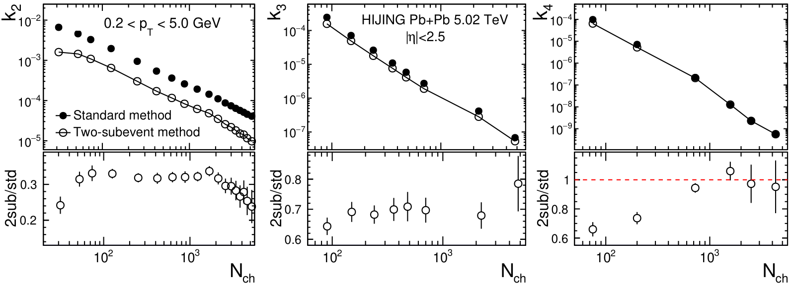
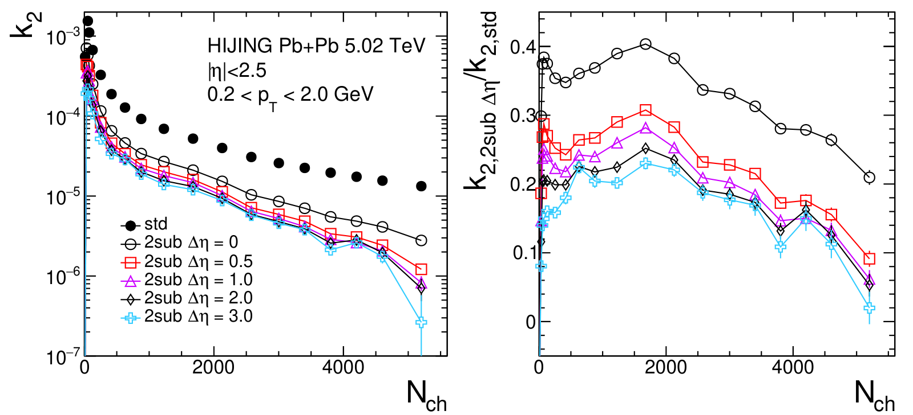
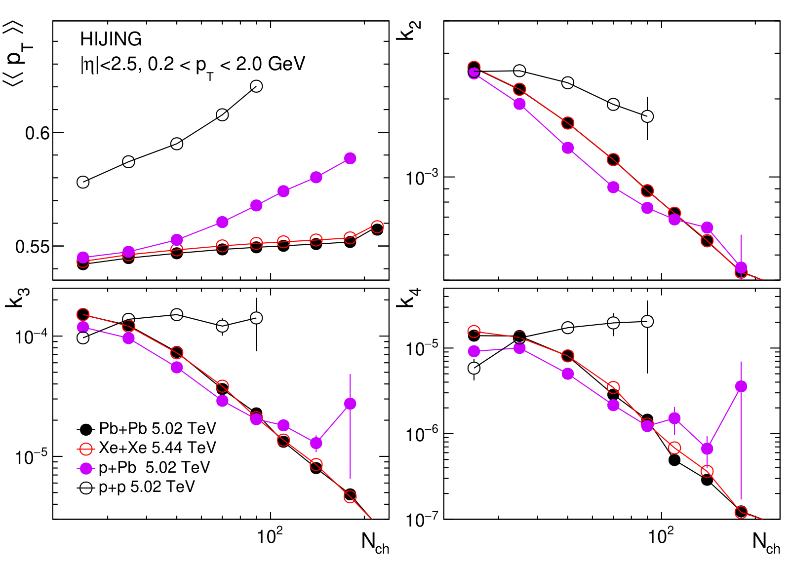

Beyond the average: how to measure the lopsidedness of momentum fluctuations
Higher-order transverse momentum fluctuations in heavy-ion collisions
S. Bhatta, C. Zhang, J. Jia, Phys. Rev. C 105, 024904 (2022)
My role: first author of this phenomenology study.
In one paragraph
The average momentum of particles changes from one collision to the next. Only the width of that spread had been measured; its lopsidedness (skewness) and tails (kurtosis) had not. We built a method to compute all four, with a version that removes short-range noise, and tested it in a model without collective flow. This gives the baseline for real data.
1The gap: only half the shape was known
In each collision we can compute the mean transverse momentum of all particles, [pT]. It is set by the size and energy density of the initial overlap region, so its event-to-event spread carries information about the initial state.
A spread is described by its cumulants: mean, variance, skewness and kurtosis. Experiments had measured only the first two. Hydrodynamic calculations predicted a skewness well above the independent-source expectation, and one that is sensitive to nuclear deformation, but neither had been measured, and computing them directly is expensive.
2What we compute: cumulants from groups of particles
Instead of first computing [pT] per event, we compare each particle's pT with the all-event average and multiply these deviations over every unique pair, triplet or quadruplet in the event. Averaging over events gives the variance (k₂), skewness (k₃) and kurtosis (k₄). We derived compact formulas that make this fast, and checked them against direct loops over particles.
Particles from the same jet or resonance decay are correlated only with near neighbours. This "short-range" correlation can mimic a real signal. In the two-subevent method, particles are taken from two separated windows, a (−2.5 < η < −0.75) and c (0.75 < η < 2.5), which suppresses it.
3What we observe in HIJING
HIJING treats a heavy-ion collision as a superposition of independent proton-proton-like sources, with no collective flow. If N independent sources add up, the n-th order cumulant should fall as 1/Nn−1.



4What we conclude
- The framework computes pT fluctuations up to 4th order, with standard and subevent methods.
- In HIJING, all orders follow the power law expected from independent sources.
- Subevents strongly suppress the short-range correlations that dominate the variance; skewness and kurtosis are less affected.
- At the same Nch, the cumulants of p+Pb, Xe+Xe and Pb+Pb follow a common trend, but pp fluctuates more.

5What comes next
- Measure skewness and kurtosis in data and compare with this baseline. The later ATLAS measurement of momentum fluctuations used these methods (see that page).
- Probe nuclear shapes: skewness is predicted to be sensitive to the deformation of the colliding nuclei.
All plots on this page are reproduced from that paper under CC BY 4.0. Animations are simplified illustrations made for this page, not results of the paper.